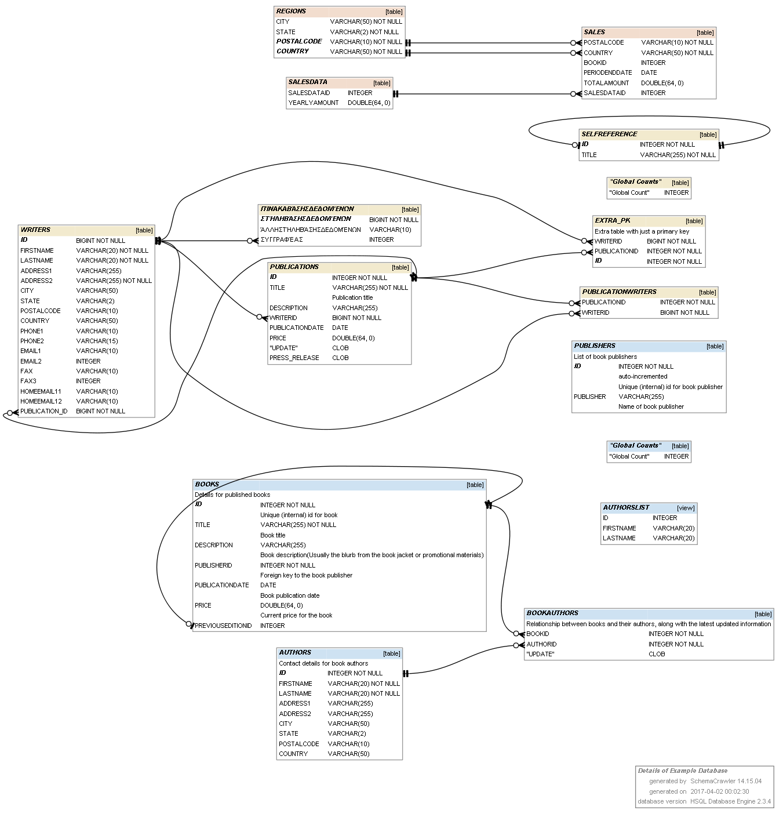
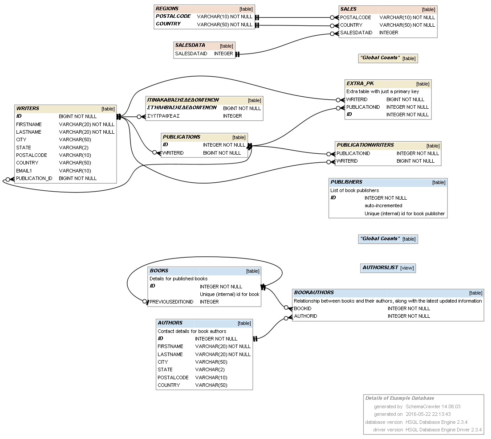
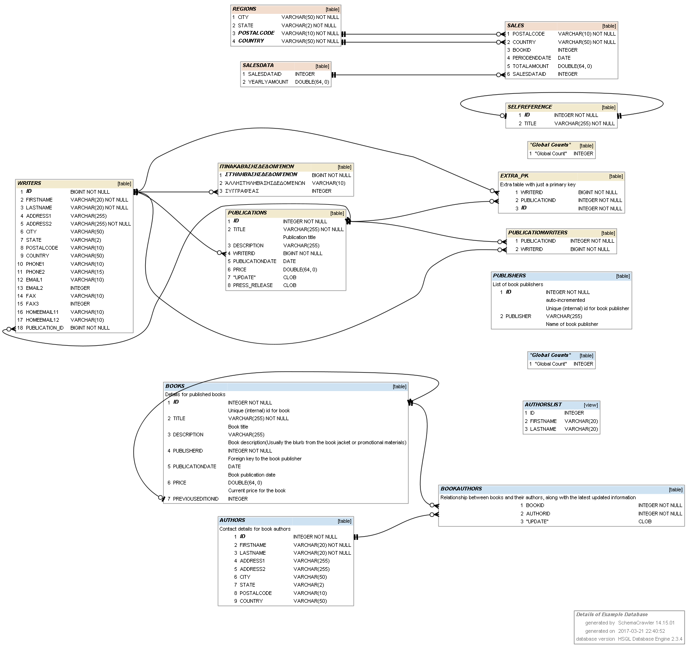
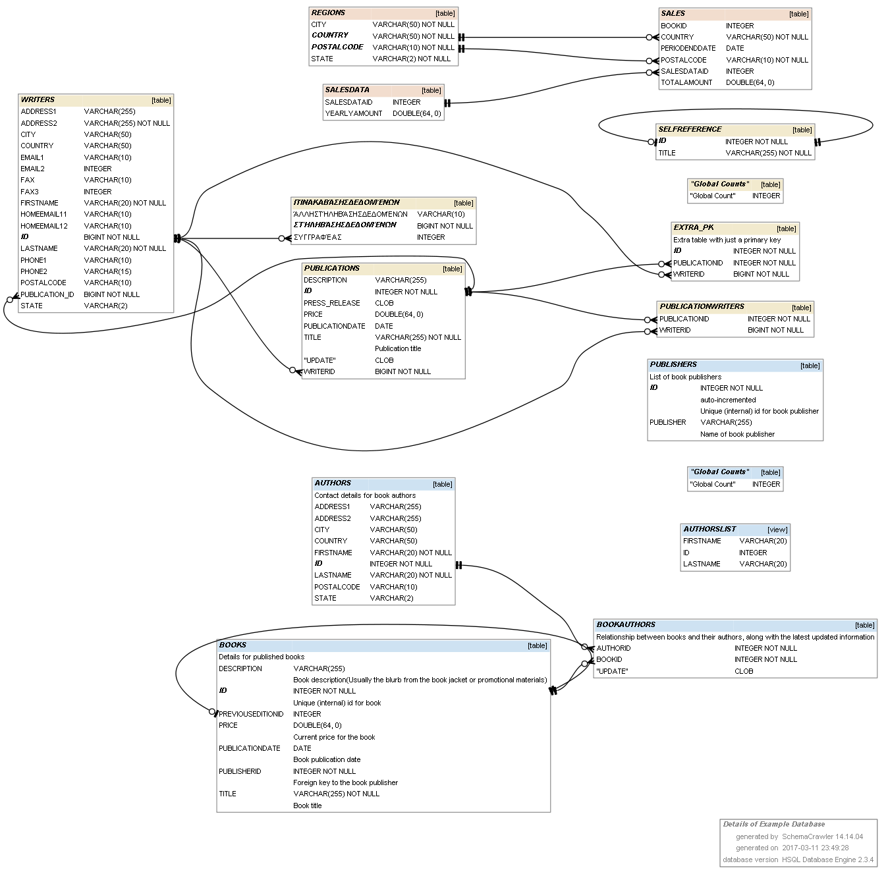
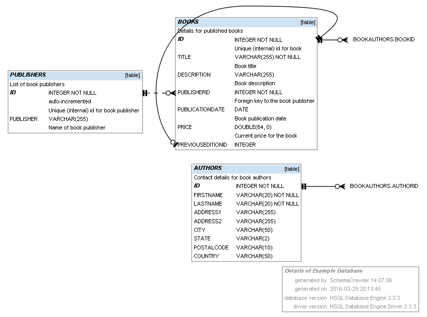
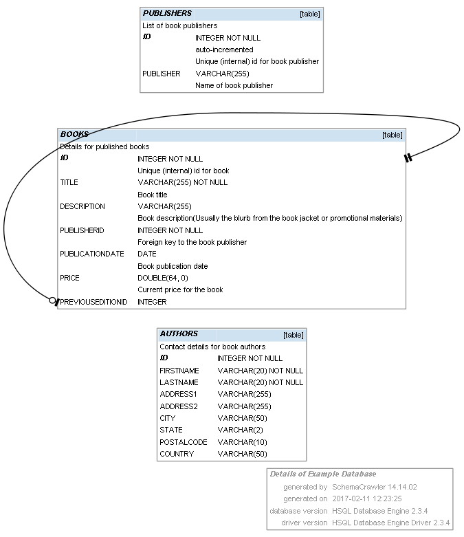
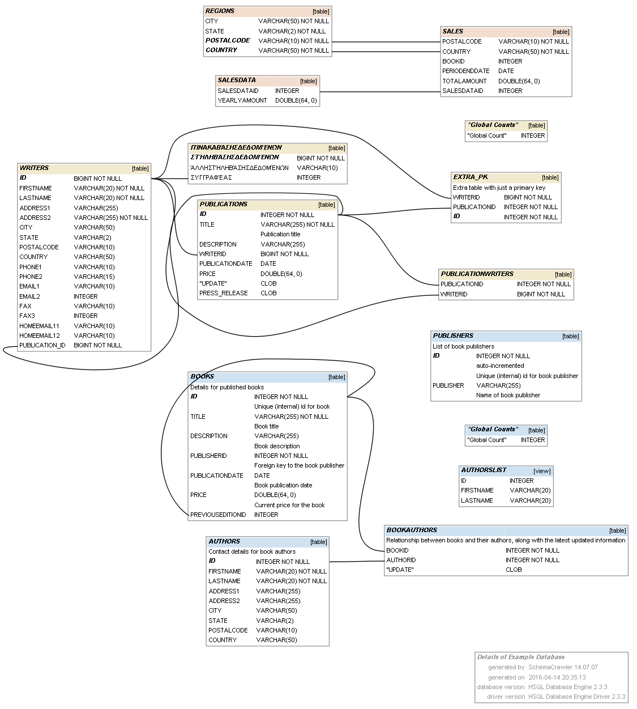
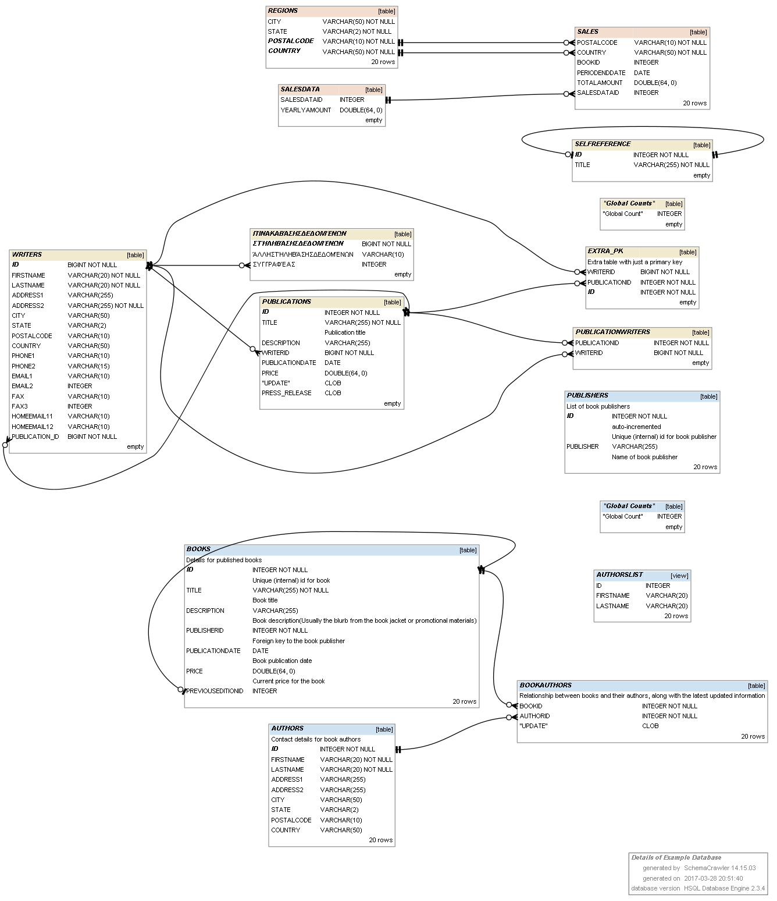
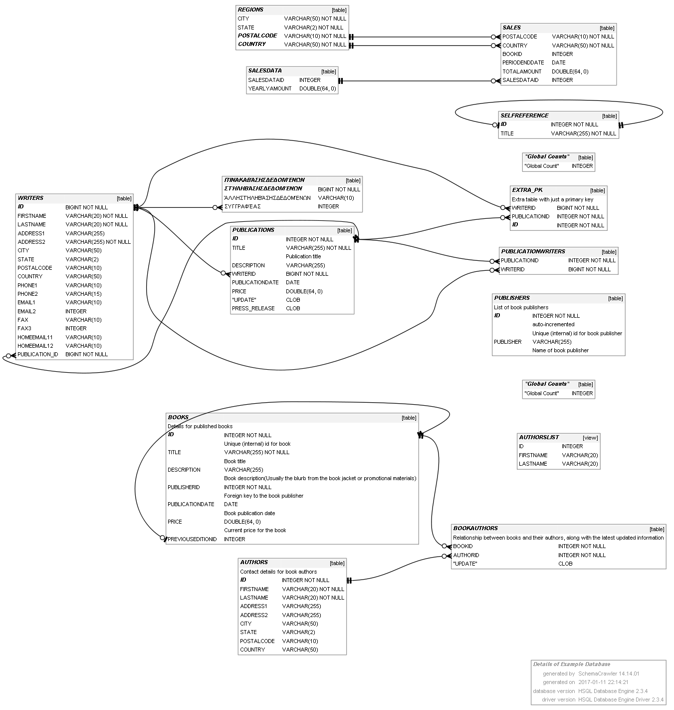

SchemaCrawler Database Diagramming
SchemaCrawler generates database diagrams using Graphviz. SchemaCrawler is unique among database diagramming tools in that you do not need to know the table names or column names that you are interested in. All you need is a search expression, in the form of a regular expression. You can filter out tables, views, columns, stored procedure and functions based on regular expressions, using grep functionality. SchemaCrawler has powerful command-line options to match tables, and then find other related tables, whether they are parent or child tables. If your schema changes, you can simply regenerate the diagram, without having to know the exact changes that were made to the schema.
To use generate SchemaCrawler diagrams, install Graphviz. Ensure that Graphviz is on the system PATH. Then you can run SchemaCrawler with the correct command-line options - for example, -command=schema -outputformat=png -outputfile=graph.png See the diagram example in the SchemaCrawler examples download. An example of a SchemaCrawler database diagram is below.
You can decide whether foreign-key names, column ordinal numbers, and schema names are displayed by setting the following properties in the SchemaCrawler configuration file, schemacrawler.config.properties.
schemacrawler.format.show_ordinal_numbers=true schemacrawler.format.hide_foreignkey_names=true schemacrawler.format.show_unqualified_names=true
You can how table row counts on the database diagram, by setting the following properties in the SchemaCrawler configuration file, schemacrawler.config.properties, and using -infolevel=maximum
schemacrawler.format.show_row_counts=true
You can provide additional Graphviz command-line options in one of three ways:
- using the schemacrawler.graph.graphviz_opts property in the SchemaCrawler configuration file,
- by passing in the additional arguments using the SC_GRAPHVIZ_OPTS Java system property,
- or by setting the SC_GRAPHVIZ_OPTS environmental variable.
SchemaCrawler does not set the dpi, or resolution of generated graphs. A useful Graphviz command-line option to set is -Gdpi=300. In the SchemaCrawler configuration file, schemacrawler.config.properties, this would look like:
schemacrawler.graph.graphviz_opts=-Gdpi=300
For more details, see the diagram example in the SchemaCrawler examples download.

Database Diagram Options
SchemaCrawler offers several options to change what you see on the database diagram. Here are a few variations:
- Suppress schema names and foreign key names, using the -portablenames command-line option.
 - Show significant columns, such as primary and foreign key columns, and columns that are part of unique indexes. Use the -infolevel=standard -command=briefcommand-line option.
 - Show column ordinals, by setting configuration option schemacrawler.format.show_ordinal_numbers=true in the configuration file.
 - Display columns in alphabetical order, using the -sortcolumns command-line option.
 - Grep for columns, and also display outgoing relationships, using -grepcolumns=.*\\.BOOKS\\..*\\.ID as a command-line option.
 - Grep for columns, but only show matching tables, using -grepcolumns=.\.BOOKS\..\.ID and -only-matching as command-line options.
 - Do not show cardinality on the diagrams, to avoid clutter. Set configuration option schemacrawler.graph.show.primarykey.cardinality=false and schemacrawler.graph.show.foreignkey.cardinality=false in the configuration file.
 - Show table row counts on the diagrams, set configuration option schemacrawler.format.show_row_counts=true and -infolevel=maximum on the command-line.
 - Do not show catalog and schema colors on the diagrams, set configuration option schemacrawler.format.no_schema_colors=true.

{kind=link}
{kind=link}
{kind=link}
{kind=link}
{kind=link}
{kind=link}
{kind=link}
{kind=link}
{kind=link}
Embedded Diagrams
SchemaCrawler can generate SVG diagrams embedded in HTML output,. To generate this format, run SchemaCrawler with an -outputformat=htmlx command-line argument. Please edit the SchemaCrawler configuration file, schemacrawler.config.properties, and comment out or delete the line schemacrawler.graph.graphviz_opts=-Gdpi=300.
{kind=link}
Tips
- Adobe Acrobat Reader sometimes cannot render PDF files generated by GraphViz. In this case, please use another PDF viewer, such as Foxit.
- To set GraphViz command-line options, edit the SchemaCrawler configuration file, schemacrawler.config.properties, and edit the line with schemacrawler.graph.graphviz_opts.
SchemaCrawler Diagrams in Use
Schemacrawler database diagrams in use at the Scrum meeting at the Software Development Departement of La Ville de Nouméa. Photograph courtesy of Adrien Sales.